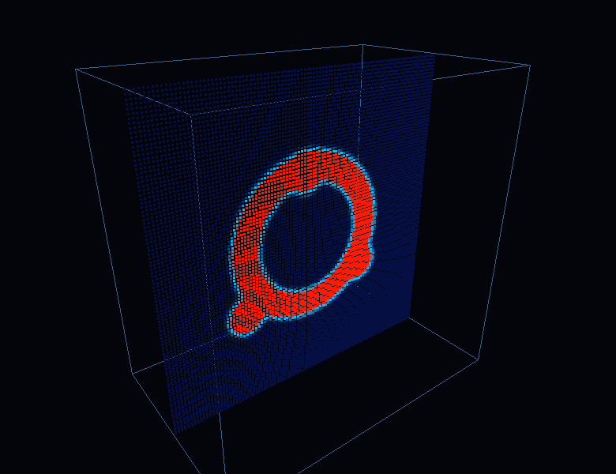

PROJECT / CUDA · GPU COMPUTE
Heat, modeled on the GPU.
I built a CUDA heat simulation to learn how a GPU can model a changing physical world in parallel. That experiment turned my curiosity toward high performance computing and computer architecture.
Inspiration
The simple differential equations behind heat diffusion offered a way to connect a physical process I could observe with the computation underneath it.
I wanted to see how a familiar model changes when thousands of calculations can run in parallel.
Process
I implemented a three dimensional heat model with CUDA and explored how the GPU updates many points in the material at once. The project gave me a hands-on way to study parallel computing, memory, and the hardware behind the simulation.
The animation below shows a center slice of the simulated volume as heat spreads over time.
Results
The simulation turns the numerical updates into a visual result, making the diffusion pattern easier to inspect and compare over time.
I’m continuing to build out the project notes and implementation details.

Project code
Browse my GitHub repositories for the source code and implementation notes.
View GitHub repositories